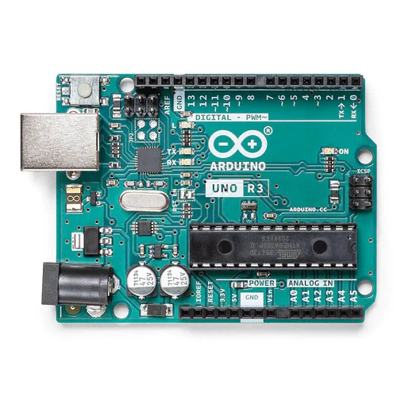

Els diferents microcontroladors tenen en comú els següents aspectes:
PWM significa "modulació de l'ample de banda", en anglès Pulse Width Modulation i és una forma d'aconseguir una sortida analògica a partir de diverses sortides digitals molt ràpides.
PWM es representa amb el símbol "~" tal com podem veure a la imatge següent d'un Arduino Uno:
Més amunt podem veure que els pins numeros 3, 5, 6, 9, 10 i 11 són PWM que són sortides analògiques de 8 bits, en el cas d'Arduino Uno Rev3, d'acord amb el fabricant, mentres que en el cas d'Arduino Uno Rev4 és de 12 bits, segons el fabricant, que l'anomena DAC, que vol dir Digital Analog Converter
Tenir 8 o 12 bits en un convertidor digital analògic o DAC tipus PWM fa que tinguem 28 o 210 nivells diferents de corrent, es a dir 256 nivells diferents o 2048 nivells diferents
Suposem que Arduino Uno Rev3 o Rev4 podem donar 5 volts com a màxim. Quina seria la resolució en milivolts de cada Arduino?
5 volts dividit entre 256 dona 0.01953125 volts = 19.53125 milivolts per arduino Rev3
5 volts dividit entre 2048 dona 0.00244140625 volts = 2.44140625 milivolts per arduino Rev4
Els milivolts anteriors són la resolució que aconseguim. Imaginem que volem regular la intensitat d'un LED amb un Arduino Uno Rev3 aconseguim menys fluid i amb graons més grans, és a dir canvis més bruscs perquè 256 canvis són menys que 2048 volts. A continuació veurem una imatge que representa com combinant moltes senyals digitals ràpidament sembla que generem un senyal analògi i això és la base del PWM.